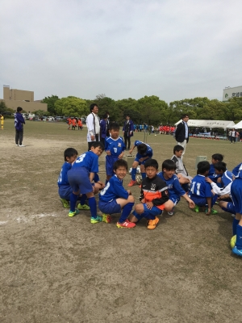

ゴールデン・ウィーク終わったョ。
ゴールデン・ウィーク、無事に終わり
今日から通常営業( ? )に戻ります～。
ゴールデン・ウィーク後半戦は(も ? )やっぱりサッカーざんまいでしたが
今年は例年よりも楽だった気がするな～。
・・・とは言っても、近場ばっかりの予定だったわけではないし
昨日は乾燥してて風が強くて、なんか全身砂まみれになって(汗)、
お昼過ぎる頃には「お風呂入りたい～」て、感じだったんですけどね(汗)。
3日・4日は新城総合公園で「シリウスカップ」に参加しました。
ここんところ、サッカーを見に行っても写真はほとんど撮らないので、
知多SCのブログ記事をお借りしてご紹介(笑)。
《知多SCブログ5月3日記事》シリウスカップ U-11･12 その1
《知多SCブログ5月3日記事》シリウスカップ U-11･12 その2
今回は愛知県内への遠征だったんですが、日帰りバスで連れて行ってもらいました。
私たちは自分の車で現地へ・・・ヤツらはちょっとした遠足気分で楽しそうでした(笑)。
ちよっと～遊びに行くんじゃないよ ? きみたち ??
・・・ゴールデン･ウィークだし、いつもと違って楽しい道中、まぁ、いっか(汗)。
1日目は予選リーグで3試合
× FCシエロ 2-2
× FCシリウスB 4-0
× アンテロープ塩尻B 0-0
1勝2引き分け、得失点差でかろうじて1位通過・・・(汗)
なんてゆーか、決定力がないんだよね～(汗)。
いい感じでボールが回るようにはなって来て、
チャンスはあるんだけど決めきれない・・・今後の課題でしょうか。
2日目は順位トーナメント戦で3試合
× 河瀬FC 7-0
× FCシエロ 6-2 準決勝
× アンテロープ塩尻A 1-3 決勝
結果、準優勝。
アンテロープ塩尻、強かったです。
Bチームもディフェンスは上手だったけど、
Aチームは特に思うように攻めさせてもらえなかったなぁ。
塩尻ってことは長野県のチームかな ?
いつもシリウスカップは予選リーグから決勝トーナメントまで
1日でてんこもりに試合してるんですが(笑)、連休中ってこともあってか
今回初の2日開催だったみたいです。
途中、リフティングチャレンジゲームとか、イベントもあって
けっこう楽しかったデスよ～。
5、6日はサッカーはお休みでした。
5日はお友達が遊びに来てくれて、一緒に半田運動公園に行って来ましたよ。
晩ご飯は先日の約束(笑)「焼き肉」食べました～。
大ふんぱつして「知多牛」のお店へ。
ドキドキしながら「す・・・好きなだけ食えっ !! 」(笑)
昨日7日は「JCカップ愛知県大会」に参加しました。
勝てれば東海大会、全国大会へと続いていく公式戦です。

午前中は予選リーグ2試合
× 蒲郡FCマリナーズ 2-0
× 瀬戸FC 2-1
午後から決勝トーナメント
× 津島AFC 0-0 PK負け 準決勝
残念・・・決勝に進むことはできませんでした。
やっぱり、チャンスを活かすことができない感じでしたね・・・。
これから相手のディフェンスもどんどん上手になって行くし、
少ないチャンスをいかにしてものにできるかが大事になって行くように思います。
チームのみんなががんばって相手から奪って、一生懸命運んできたボールを
大事に大事に相手ゴールにねじ込むのがフォワードの役割だよ。
どんなボールでも自由にコントロールできるテクニックと
どんな相手でもひるまずに勝負に挑む度胸と根性(笑)、
身に付けたいね、サカハルくん。